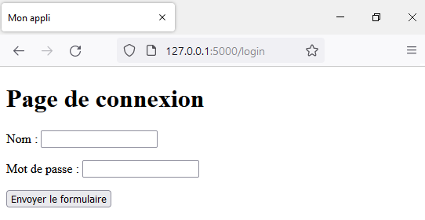

Dans cet exemple, on va illustrer comment un serveur Web peut récupérer et traiter les données d’un formulaire de connexion, présent sur de très nombreux sites.
Voici la vidéo associée à cette activité à partir de 7:33 (https://youtu.be/FdA1P7dY_18?t=453) :
Dans le script mon_app.py on crée une route /login permettant d’accéder à notre formulaire via le template login.html :
mon_app.py
from flask import Flask, render_template
app = Flask(__name__)
@app.route("/")
def index():
return render_template("index.html")
@app.route("/login")
def login():
return render_template("login.html")
if __name__ == '__main__':
app.run(debug=True)
Le template login.html, situé dans le répertoire templates est le suivant :
templates/login.html
<!DOCTYPE html>
<html lang="fr">
<head>
<meta charset="UTF-8">
<meta http-equiv="X-UA-Compatible" content="IE=edge">
<meta name="viewport" content="width=device-width, initial-scale=1.0">
<title>Mon appli</title>
</head>
<body>
<h1>Page de connexion</h1>
<form action="" method="">
<p>
<label for="nom">Nom : </label>
<input type="text" name="nom" id="nom" required>
</p>
<p>
<label for="mdp">Mot de passe : </label>
<input type="password" name="mdp" id="mdp" required>
</p>
<p>
<input type="submit" value="Envoyer le formulaire">
</p>
</form>
</body>
</html>
En naviguant à l’URL http://127.0.0.1:5000/login on obtient l’écran suivant :

action et methodOn choisit ici de traiter les données du formulaire avec une autre route : /traitement. Pour cela, on ajoute cette route dans notre script mon_app.py :
mon_app.py
@app.route("/traitement", methods=["POST", "GET"])
def traitement():
return "Traitement des données" # provisoire
Et on définit cette route dans l’attribut action du formulaire :
templates/login.html
<form action="{{ url_for('traitement') }}" method="">
Remarque : On a utilisé la méthode url_for dans le template en lui passant sous forme d’une chaîne de caractères, le nom de la fonction associée à la route /traitement. On aurait aussi pu écrire directement action="/traitement" mais cela supposerait alors de devoir modifier la valeur de l’attribut action si on décide de réorganiser les routes de notre application.
Ici, les données à transmettre sont à caractère confidentiel, donc on choisit la méthode POST :
templates/login.html
<form action="{{ url_for('traitement') }}" method="POST">
On peut désormais écrire la version finale de la fonction traitement() :
# ne pas oublier d'importer les méthodes nécessaires
from flask import Flask, render_template, request
@app.route("/traitement", methods=["POST"])
def traitement():
donnees = request.form
nom = donnees.get('nom')
mdp = donnees.get('mdp')
if nom == 'admin' and mdp == '1234':
return render_template("traitement.html", nom_utilisateur=nom)
else:
return render_template("traitement.html")
Analyse :
POST, et donc de récupérer les données du formulaire, on a définit ["POST"] comme valeur du paramètre methods du décorateur @app.route("/traitement").request.form qui est un dictionnaire dont :
name des champs du formulaire)donnees.get('nom') et donnees.get('mdp') puis effectuer le traitement souhaité.Dans le dossier templates, on crée le template traitement.html contenant :
templates/traitement.html
<body>
{% if nom_utilisateur %}
<p>Bonjour {{ nom_utilisateur }}, vous êtes connecté.</p>
{% else %}
<p>Un problème est survenu.</p>
{% endif %}
</body>
Analyse : Si la fonction traitement() a transmis nom_utilisateur au template (on sait que l’identification est OK), alors on l’utilise pour afficher un message de connexion réussie, sinon (si l’identification a échoué) on affiche un paragraphe d’erreur.
On peut améliorer la fonction traitement() de sorte à ce qu’un utilisateur naviguant à l’URL http://127.0.0.1:5000/traitement sans passer par le formulaire, donc avec une méthode GET, soit redirigé vers la page d’accueil du site. En effet, dans ce cas aucune donnée n’est transmise, il n’est donc pas nécessaire ni logique d’effectuer les traitements précédents.
Pour cela, on ajoute "GET" dans les méthodes autorisées pour la route /traitement et on utilise request.method pour déterminer la méthode utilisée pour la requête :
"POST", on fait le traitement précédentGET) on redirige l’utilisateur grâce à la méthode redirect à qui on passe l’URL correspond à la fonction index grâce à url_for :mon_app.py
# ne pas oublier d'importer les méthodes nécessaires
from flask import Flask, render_template, request, redirect, url_for
@app.route("/traitement", methods=["POST", "GET"])
def traitement():
if request.method == "POST":
donnees = request.form
nom = donnees.get('nom')
mdp = donnees.get('mdp')
if nom == 'admin' and mdp == '1234':
return render_template("traitement.html", nom_utilisateur=nom)
else:
return render_template("traitement.html")
else:
return redirect(url_for('index'))
On en profite pour ajouter, sur la page d’accueil, un lien vers la page de connexion. C’est très simple, on ajoute une balise de lien hypertexte <a> dont la valeur de l’attribut href est l’URL vers laquelle pointe l’hyperlien. En utilisant url_for on obtient facilement l’URL associée à la fonction login :
templates/login.html
<body>
<p>Bienvenue sur mon site !</p>
<a href="{{ url_for('login') }}">Se connecter</a>
</body>
Créer un formulaire permettant à un utilisateur de saisir son nom, son prénom et de choisir dans une liste d’options la spécialité qui sera abandonnée parmi les spécialités “HGGSP”, “HLP”, “NSI”, “SVT”, “Mathématiques”, “Physique-Chimie”, “SES”, “LLCE”.
Les données saisies devront être transmises au serveur via la méthode POST et le serveur devra construire un template avec un message personnalisé en guise de réponse. Par exemple, si l’utilisateur saisit le prénom “Armin”, le nom “Ronacher” et sélectionne la spécialité “SES”, alors la page renvoyée doit contenir un paragraphe indiquant : “Bonjour Armin Ronacher, vous avez choisi de ne pas poursuivre la spécialité SES en Terminale”.
L’idée de cet exercice est de simuler le fonctionnement d’un dictionnaire en ligne. On supposera qu’il s’agit d’un dictionnaire Français-Anglais.
Voici les contraintes à respecter :
traductions suivanttraductions {
"mot": "word",
"supprimer": "remove",
"requête": "request",
"méthode": "method",
"répertoire": "directory",
}
Références :
Germain BECKER & Sébastien POINT, Lycée Emmanuel Mounier, ANGERS